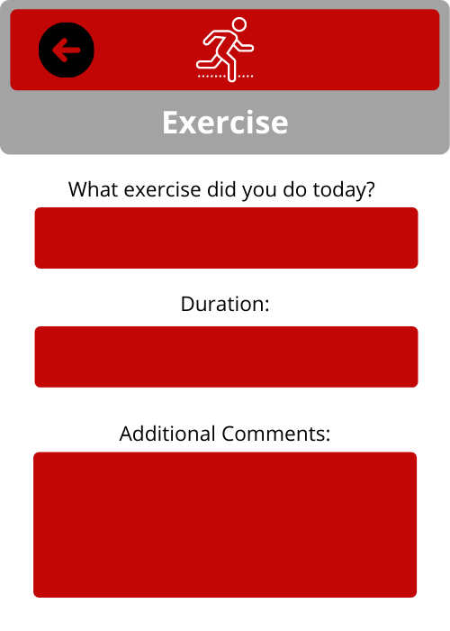

Apps for Good is a group application development project that Mass Academy students complete during D term of junior year as a part of the Computer Science class. My group consisted of myself and my classmates Rama and Shay. Our Android app, Curae Suprema, provides an elder individual with an easy-to-use tool to monitor their daily tasks and routines, mental and physical health, and medication history. The use of this app in assisted living environments will promote more independence in residents, while also allowing more effective patient care. View our Github repository to access our code.
Executive Summary
It is difficult for many elderly people to keep a healthy routine and to feel a sense of independence. The main goal of our app is to help elderly patients create and keep a daily schedule. By tracking daily tasks and being encouraged to complete healthy activities, the user can have more control over their lives and has the option to not be as reliant on a caretaker. The elderly patient may also find it useful to have a collection of daily activities to present to a family member or medical professional. Unlike other apps meant to aid elderly people, our app shall directly allow the elderly to track their health information and possibly become more self-reliant. Our app shall be easy-to-use and have features that a wide range of elderly patients can find helpful to establish a daily routine.
Introduction
Problem
As people age, residential facilities provide much needed care for older communities that cannot be done at home, despite the support of friends or families. There are many long-term care options that are available, such as board and care homes, assisted living facilities, and nursing homes, among others (Residential Facilities, Assisted Living, and Nursing Homes, n.d.). Though these are all effective options for elderly people, keeping track of and synthesizing information about daily routines, behavioral tendencies, and other medical information can be difficult especially if the patient has multiple caregivers. To clarify, behavioral tendencies refer to daily hygiene routines, allergy procedures, and other activities that a patient regularly does (refer to Figure 1). This issue can lead to misinformation, lack of holistic care, and a quality of life that is lower than it should be.
On top of the difficulties posed to elderly patients themselves, assisted living also takes a significant toll on the caregiver for that patient. Around 40 to 70 percent of caregivers suffer from depression due to the constant mental taxation that comes with taking care of a loved one or someone in need. Caregivers also displayed a 23 percent higher level of stress hormones, and 45 percent reported having some kind of chronic condition, including heart disease, cancer, diabetes, and arthritis (Ingber, 2018). Thus, inefficient caretaking can lead to substantial long-term problems for not just the patient, but the caregiver as well.
Figure 1. Describes the general tasks that those in the target age group require assistance with. Facts & Figures. (n.d.). Retrieved 2 April 2021, from https://www.ahcancal.org/Assisted-Living/Facts-and-Figures/Pages/default.aspx.
Audience
This app will appeal to elderly patients under the responsibility of a caregiver at assisted living facilities as well as those living independently. This demographic mainly refers to those over the age of 65 (Saint Simeon's, n.d.). It will also be targeted towards caretakers, both professional and casual, who seek relief from the stress that comes with caretaking and wish to help their patient or loved one foster independence in taking care of themself. The patients should use the app as a part of their daily routine to organize their itinerary and diminish the requirement of common routine-based and dietary reminders from caretakers. In this way, if the patient is consistent in using the app and able to develop independence through its guidance, a large responsibility will be lifted from the caregiver.
Competition
Though a wide variety of apps and products exist to aid individuals in caring for their medical needs, there is no such app that specifically allows someone to monitor or keep track of their behavioral tendencies. Additionally, existing apps focus on the health care provider’s ability to provide easier care for their patients. One such example is Caring Village, an app that allows doctors and caregivers to schedule appointments, track the elderly patient if needed, and securely message them. Patients are able to keep track of their medications, have a customizable care plan, and see all of their medical engagements in a centralized calendar (Caring Village 2021). This app is not most effective in helping someone lead a more independent and healthy life because the doctor controls the activity on the app. Despite the messaging service, there is no other method for the patient to convey their daily or weekly mental state and emotions, which are, as stated previously, crucial to effective medical care.
Another existing product is TherapyNotes, which is similar to Caring Village because it only allows caregivers of the elderly to track patients and their information. The application keeps track of health records so that they are easily accessible. Caregivers and patients can schedule doctor’s appointments and the caregiver can create to-do lists as well as track information (Behavioral Health EHR/EMR | TherapyNotesTM, n.d.). The app is designed for the caregiver, not the elderly patient, which means that the patient has less independence. Thus, everything that is tracked is simply notes for the caregiver rather than for the patient.
Based on these current products, it is easy to see a gap in the market for one, allowing patients to have more independence in keeping track of their medical information, and two, allowing the patients to keep track of their behaviors and mental health to report back to doctors. An effective app for the target is one that is simple and easy to use, but also allows the patient to keep track of their medical needs and behavioral tendencies independent of their caregiver. This will allow the patient to become more independent, thereby improving their overall quality of life. To clarify, this app is not meant to fix any or all issues of the patient, but allow them more control over their own care and effectively convey certain events or activities completely to their doctors. To go further, the most effective apps should not only help elderly patients become more independent to give them the benefits of control over their lifestyle, but also make the care provided by the caregivers and medical professionals more effective.
Specifications
Feature 1: Monitoring behavioral tendencies (MVP)
Behavioral tendencies refer to a patient’s daily routine, hygiene practices, socialization, meals, and any other activities they have completed that day. These factors significantly contribute to the overall health and state of mind of older patients, and are often important to report back to your health care provider. The most important feature of the app shall allow the elderly to track these tendencies. This feature will take in existing information and allow the user to add to it in order to keep the most updated information for any caregiver or doctor. The app will encourage users to keep an efficient daily routine and live a healthy lifestyle by sending notifications about keeping track of their activities and telling users how to balance their diet based on the food groups. This is the most essential feature because it actively allows the patient more control over their health care plan and lives a more healthy lifestyle beyond taking the right medications.
Feature 2: Day-to-day health tracking
This feature takes input from the patient based on how they are feeling both physically and mentally at any given time or day. If the patient consents to others viewing the data in their app, health information can be readily shared with caregivers and doctors during visits and appointments. If the patient does not consent, the patient will still be able to communicate the information by looking at the easy-to-interpret data themselves. The main purpose of this feature is to provide guiding questions about the patient’s general physical and mental health and spaces for open-ended responses. The information stored here will be dependent on whether or not the user wants to or is able to keep an ongoing record daily, weekly, monthly, etc.
Feature 3: Keeping track of medications and consequent side effects
The third main feature of the app will allow the elderly to view when and how they are supposed to take medications. Notifications will be sent to remind the user that they need to take their medicine and a checkbox will appear in order to make sure the task was completed. This feature of the app will also keep track of the dosage, supply level, and purpose of each medication in order to give the patient the most information possible for them to be educated on their health. The patient can also make note of any side effects (along with the date) for easy reference later on. The final task of this feature is to take the stored dosage and supply information to give a notification to the patient about when they need to refill medications.
Feedback
The app shall be built for Android devices and will be available for download through Google Play. Customers can rate and review our app through Google Play. From user comments, we hope to gain a better sense of what the target audience seeks in an app like this. By learning more about what the elderly need to establish a more independent lifestyle, we shall make changes to our app to accommodate. We also plan to improve our app based on complaints, whether it be layout/design, functionality, or bugs. In this way, our app can become more useful for the elderly.
Possible Extensions
In the case that more features are feasible for implementation, a possible future attribute being considered is one that allows for communication between the patient and medical personnel through the app. With this feature, users could easily talk to their doctor to express concerns or questions regarding medications and general health.
Another nice-to-have feature is keeping track of insulin levels for the elderly who have diabetes. This feature would allow the user to track data multiple times a day depending on doctor recommendation; see past data to review their progress; and tell if their current insulin level is healthy, including what the user can do about it to bring it back to normal.
Technical Data and Feasibility
The data stored in the app will mainly be from user input, as this will allow for the most customization, and in turn, optimization of the app’s features. The type of data is mainly associated with daily or repetitive behavioral tendencies, such as the user’s hygiene routine, allergies, and their meal plan, among other things. Upon opening the app and making an account for the first time, the nurse in the assisted living environment will aid the patient in putting in their initial information and/or editing the default tasks that exist in the daily tasks portion of the app. The patient will then have the ability to keep a qualitative daily log of mental and physical health for their own records and sharing with their healthcare provider.
The app utilizes firebase in order to store data in the cloud. This will allow the app to have the capability for accounts. This will keep the patient data stored in a secure location that prevents other people from accessing the data or viewing it without the consent of the patient.
User Interface
Structural Diagram
Persistent Storage
The data will be stored in a Firebase that is only accessible through user log-in. The patients will have accounts with varying access to information in the cloud. The main data of a patient that will be stored in the cloud include: name, medications, behavioral actions, and daily log entries. All patient data is stored in this cloud and will only be viewed by a doctor or nurse if the patient consents to the viewing of their data. Additionally, cloud storage is used so that it stays secure and is only accessible to whomever has the corresponding account and level of clearance on the app. The app will be sponsored by the nursing home or senior living home responsible for the clients to make sure it complies with the administration’s legal policy.
Apps for Good Fair Presentation
References
Behavioral Health EHR/EMR | TherapyNotesTM. (n.d.). Retrieved April 1, 2021, from https://www.therapynotes.com
Caring Village | FREE help for families and caregivers. (n.d.). Caring Village. Retrieved March 26, 2021, from https://www.caringvillage.com/
Facts & Figures. (n.d.). Retrieved 2 April 2021, from https://www.ahcancal.org/Assisted-Living/Facts-and-Figures/Pages/default.aspx
Ingber, R. (2018, December 18). Caregiver Stress Syndrome. Retrieved 2 April 2021, from https://caregiver.com/api/content/361e1fc0-fcc1-11e8-8be9-120e7ad5cf50/
Residential Facilities, Assisted Living, and Nursing Homes. (n.d.). National Institute on Aging. Retrieved April 1, 2021, from http://www.nia.nih.gov/health/residential-facilities-assisted-living-and-nursing-homes
Saint Simeon's. (n.d.). The Latest Assisted Living Facts and Statistics [Web log post]. Retrieved April 2, 2021, from https://saintsimeons.org/blog/the-latest-assisted-living-facts-and-statistics/#:~:text=There%20are%20more%20than%20835%2C000,assisted%20living%20communities%20are%20female